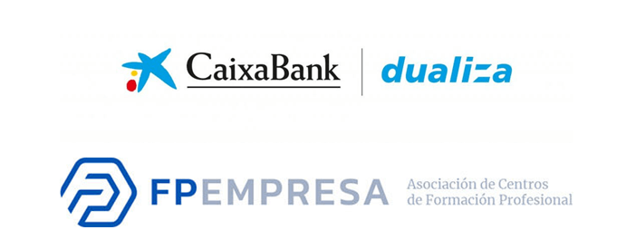

¿Qué es Dualiza?
La beca llamada Dualiza es una convocatoria de ayudas que organiza caixabank dualiza y la asociación de centros de formación profesional (FP Empresa), la cual está destinada a financiar los proyectos innovadores de Formación profesional (FP) desarrollados en colaboración entre centros educativos y empresas.

Oportunidad otorgada
En la convocatoria IX del curso 2025-2026 nuestro instituto puig castellar de santa coloma de gramenet consiguió participar con el proyecto de identificación de microorganismos simbiontes en corales colaborando con IES Sierra de Guara en Huesca, Aragón y con el instituto Provençana de l’Hospitalet de Llobregat y también con un colaborador científico en el museo de historia natural de Viena en Austria